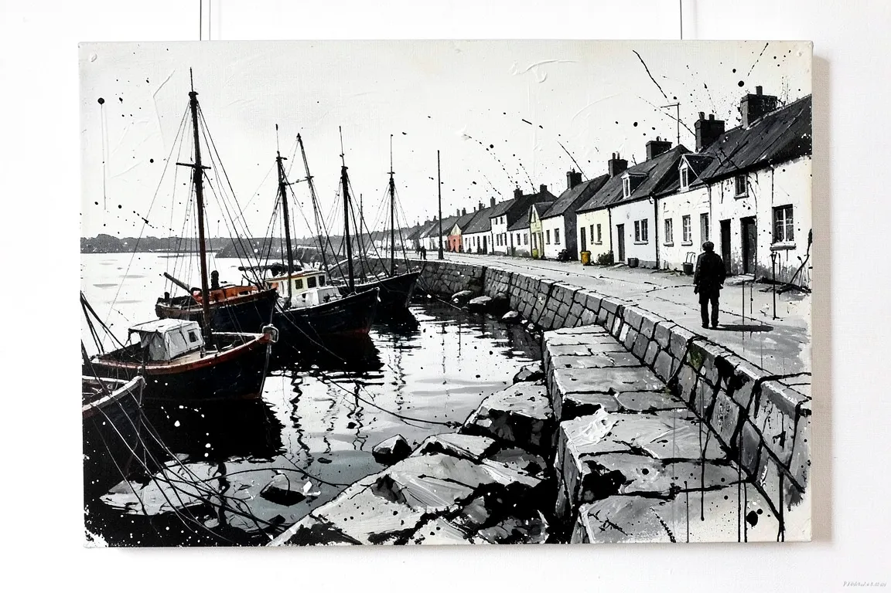

Store abstrakte malerier der selve malehandlingen er motivet: gest, dryp og hugg i den ene leiren, store myke fargefelt i den andre. Lerretet er en arena for en hendelse, og det er stort nok til å omslutte betrakteren.

Kjerneidé
Et maleri er sporet av en handling, og formatet, merkene og fargen setter betrakteren inn i følelsen og ikke foran et bilde.
Designprinsipper
Mal i et format på 2 til 5 m på langsiden, slik at lerretet fyller synsfeltet på 1 til 2 m avstand.
Vis hvert merke: strøk, dryp, sprut og skrap på 20 til 200 mm, lagt med hele armen og ikke med håndleddet.
Dekk lerretet fra kant til kant i en overalt-komposisjon, uten ett enkelt blikkfang og med lik tetthet i kantene og midten.
Slipp objektet helt; bildet viser ikke til noe utenfor sine egne merker.
Hold en bevisst spenning mellom noen få motsatte krefter: svart mot hvitt, tykt mot tynt, orden mot tilfeldighet.
I fargefelt-grenen erstattes merket med 2 til 4 store, bløtkantede felt av tynn farge stablet vertikalt.
La det første merket stå synlig: vis rettelser, dryp og prosessens spor.
Antimønstre
Gjenkjennelige objekter, figurer eller landskap
Harde, linjerette kanter og mekaniske rette linjer
Et lite format som kan leses som en vignett
En glatt, jevn overflate som skjuler prosessen
Et sentralt blikkfang med en innrammet, symmetrisk oppbygning